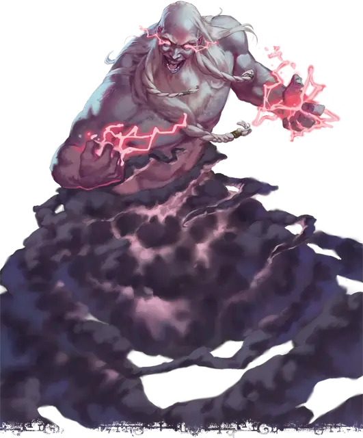

Дух Бури
Tempest Spirit
Огромная Нежить, обычно хаотично-злая

Класс Доспеха 12
Хиты 195 (17к12 + 85)
Скорость 0 футов, летая 60 футов (парит)
| мод | спас | ||
|---|---|---|---|
| СИЛ | 24 | +7 | +7 |
| ЛОВ | 14 | +2 | +2 |
| ТЕЛ | 20 | +5 | +10 |
| мод | спас | ||
|---|---|---|---|
| ИНТ | 16 | +3 | +8 |
| МДР | 18 | +4 | +9 |
| ХАР | 19 | +4 | +9 |
Навыки Восприятие +9, Магия +8
Сопротивление урону некротическая энергия, холод, яд; немагический дробящий, колющий, рубящий
Иммунитет к урону звук, электричество
Иммунитет к состояниям захват, испуг, истощение, окаменение, опутанность, отравление, очарование, паралич, сбивание с ног
Чувства пассивное Восприятие 19
Языки Общий, Великаний
Опасность 15 (13000 опыта)
Бонус мастерства +5
Особенности
Бестелесное перемещение. Дух может перемещаться сквозь других существ и предметы, как если бы они были труднопроходимой местностью. Оно получает 5 (1к10) урона силовым полем, если оканчивает ход внутри предмета.
Легендарное сопротивление (3/день). Если дух проваливает спасбросок, он может вместо этого сделать спасбросок успешным.
Действия
Мультиатака. Дух совершает две атаки Кулак молнии или Градом в любой комбинации.
Кулак молнии. . Рукопашная атака оружием: +12 к попаданию, досягаемость 10 футов, одна цель. Попадание: 25 (4к8 + 7) урона электричеством.
Град. . Дальнобойная атака оружием: +12 к попаданию, дистанция 90/180 футов, одна цель. Попадание: 17 (3к6 + 7) дробящего урона плюс 7 (2к6) урона холодом.
Смертельный снаряд (перезарядка 5-6). Дух метает магическую молнию 120-футовую линией и шириной 10 футов. Каждое существо в этой области должно совершить спасбросок Ловкости Сл 18, получая 27 (6к8) урона электричеством плюс 16 (3к10) урона некротической энергией в случае провала, или половину этого урона в случае успеха.
В случае успеха или провала максимум хитов уменьшается на величину, равную полученному урону некротической энергией. Это уменьшение длится до тех пор, пока цель не окончит продолжительный отдых. Цель умирает, если этот эффект уменьшает максимум её хитов до 0.
Бонусные действия
Гроза с градом (перезарядка 4-6). Дух вызывает грозу с градом в цилиндре радиусом 20 футов и высотой 40 футов с центром в точке, которую он может видеть на расстоянии 120 футов. Каждое существо в этой области должно совершить спасбросок Ловкости Сл 17. В случае провала существо получает 10 (3к6) дробящего урона плюс 10 (3к6) урона холодом и падает ничком. В случае успеха существо получает половину этого урона и не падает ничком.
Описание
Штормовой великан может избежать смерти с помощью мистического ритуала, который превращает великана в полубессознательную бурю. Однако, если великан проводит ритуал в месте, где барьер между Материальным планом и Царством Теней тонок, просачивающаяся негативная энергия радикально изменяет результат ритуала. Душа великана наполняется негативной энергией и не рассеивается в стихии. Скорее, он поглощает энергию стихий вокруг себя, и его нижняя часть тела становится грозовым облаком. Появившийся в результате дух бури внешне похож на джинна, а искатели приключений иногда принимают его за такового.
Некоторые духи бури не могут принять свою новую форму и в одиночку пытаются отменить трансформацию. Другие охвачены яростью и следуют пути разрушения. Массивный град и молнии, наполненные некротической энергией, обрушиваются дождем духов бури на тех, кто подходит к ним слишком близко.